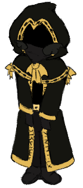

I'm some 18 year old university student on the internet that studies computer science (unfortunate).
I am known online as Taph, but I'm also known by many other names.


Here's some useless facts about me.
| Pronouns | any/all |
| Timezone | GMT+7 (Current Time: ) |
| Birthday | 6th December |
Here's some useless facts about me.
- I am Indonesian, unfortunately.
- I use tonetags often, these are what I usually use!
- You can usually find me playing games, code, or draw.
- I love spicy food; I usually hate garlic and onions, but I like onion rings.
| @crowoftheday | |
| Discord | @crowoftheday |
| Roblox | @crowoftheday |
| Steam | crowoftheday |